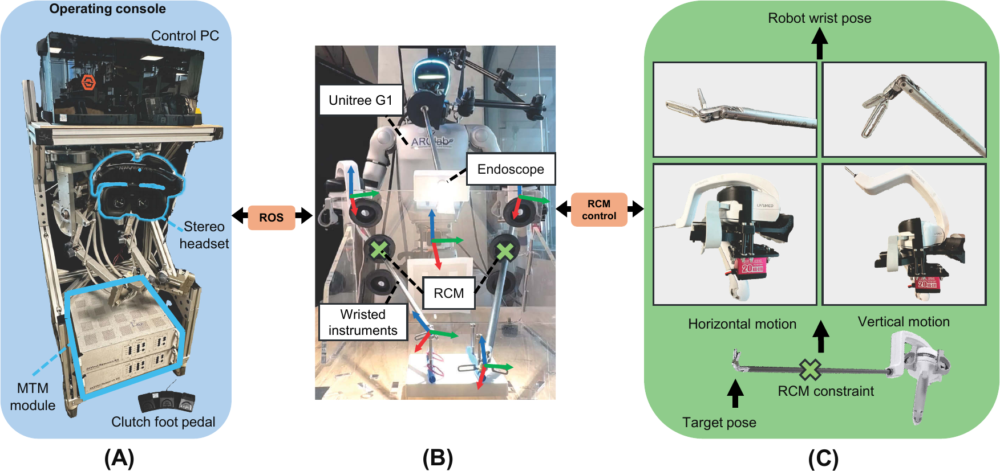
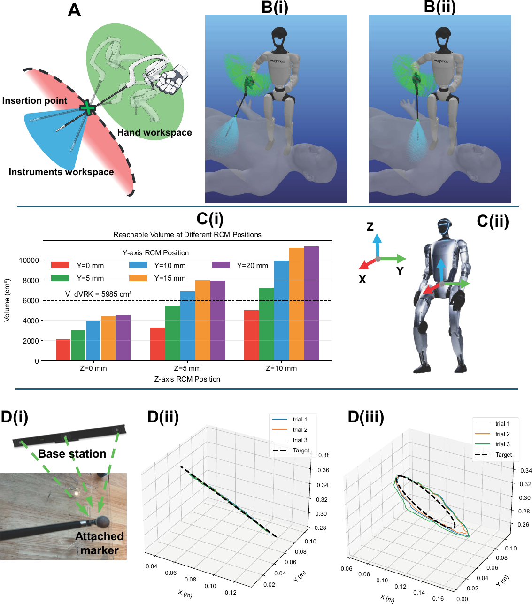

Recent advances across actuation, control, and learning have rapidly pushed humanoid robots from a distant vision toward near-term real-world deployment. Healthcare is a particularly pressing domain, where staffing shortages and increasing care demand are widening the gap between clinical workload and available skilled labor. While current automation has largely focused on digital and logistical tasks, much hospital work remains embodied, requiring mobility, manipulation, and safe interaction in human-designed environments.
Humanoid form factors offer unique potential, particularly for assisting with surgical tasks. Traditionally, robotic systems for surgery are purpose-built platforms such as Intuitive Surgical's da Vinci Surgical System, and it remains unclear how close current humanoid systems are to meeting the precision, control, and safety requirements of minimally invasive surgery.
In this work, we present a systematic evaluation of contemporary humanoid technology for laparoscopic surgical tasks. We develop a humanoid-based laparoscopic teleoperation framework using general-purpose instruments and assess its capabilities through benchtop characterization, dry-lab user studies spanning diverse surgical experience levels, and in vivo porcine studies. Across these evaluations, we quantify technical feasibility, task performance, and clinical readiness relative to established surgical platforms. Together, our study provides an evidence-based assessment of current humanoid capabilities and limitations for surgical applications, highlighting both their promise and key technical challenges that must be addressed before clinical deployment.



@article{humanoidsurgeon2026,
title = {Humanoid Robot Surgeon: A First In-Vivo Feasibility Study},
author = {Liang, Zekai and Thareja, Nikita and Zhang, Peihan and Joyce, Calvin and Atar, Soofiyan and Richter, Florian and Jacobsen, Garth and Liu, Shanglei and Broderick, Ryan and Yip, Michael},
journal = {To appear},
year = {2026}
}